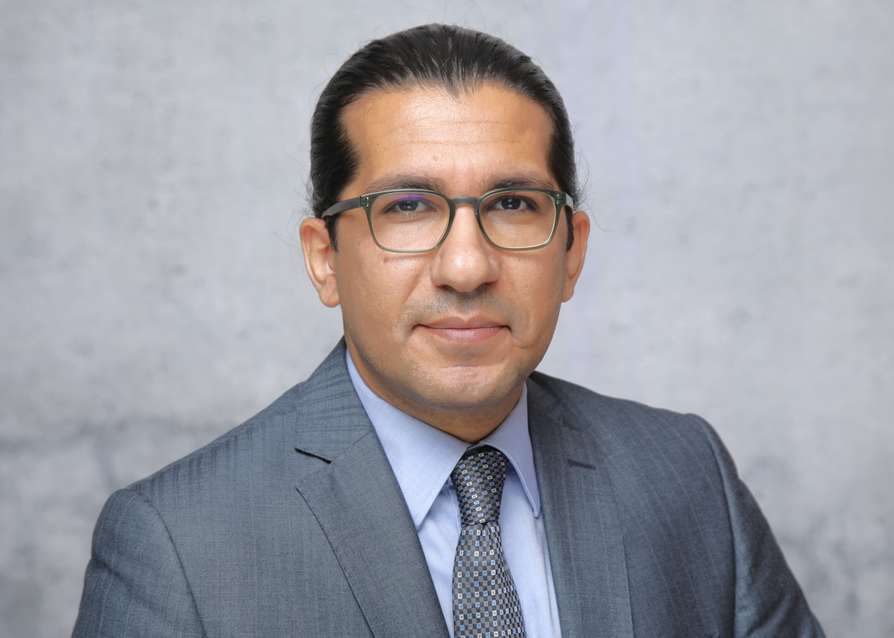

Curriculum vitae

- Born: 17/02/1978 in Jena, Germany
- Civil Status: Married, 2 children
Academic Education
- 1997 – 2003: Studies in Civil Engineering, Bauhaus-Universität Weimar, Germany
- 2000 – 2001: Visiting student at Universidad Polytécnica de Madrid
Dissertation
- 2003 – 2007: PhD scholarship, Technical University of Munich (TUM)
- 2007: PhD in Computer Support for Collaborative Construction Engineering
Post-Doc
- 2007 – 2011: PostDoc at TUM, Head of Construction Informatics
Professor Positions
- 2011 – 2012: Associate Professor, TUM
- Since 2012: Full Professor, TUM
- Since 2014: Chair of TUM Center of Digital Methods